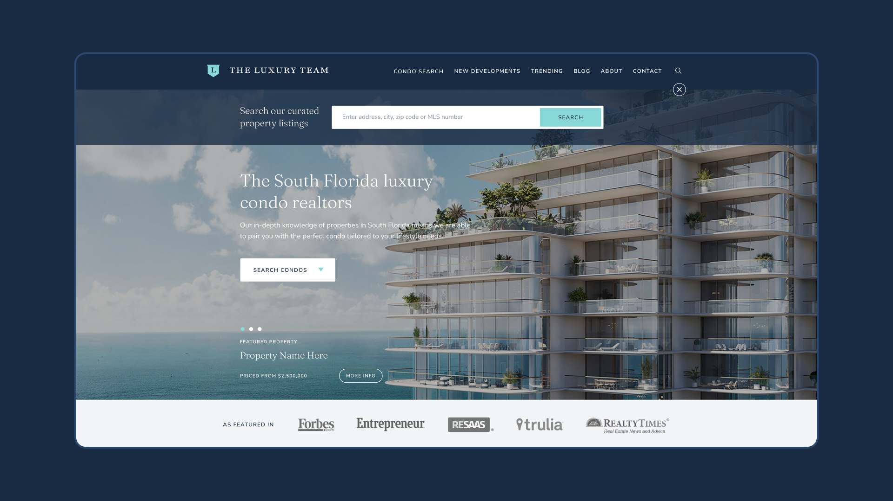
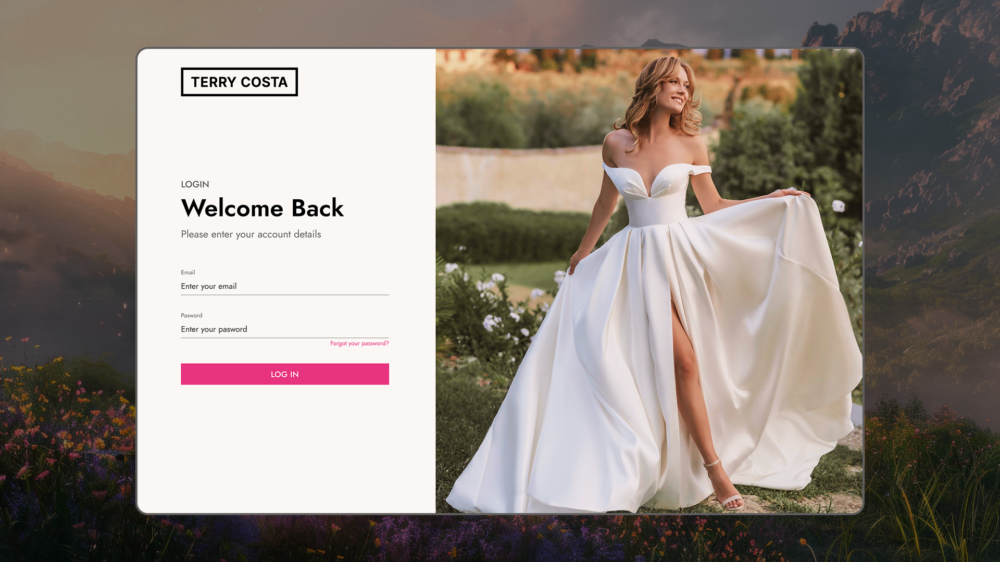

Clinical workflows and data dashboards for teams who can’t afford a wrong click — interaction logic defined with medical staff, edge cases documented for engineering.
←Home
Case library · 09 cases · 2022 – present
Projects gathered along the way
The full set — the three in-depth cases and the client and product work around them.
KYC and identity verification rebuilt end to end — discovery through usability testing — to cut drop-off without removing a single compliance step.
One digital ecosystem for passengers and crew across 65-inch displays, tablets, and mobile — each with its own interaction model. The crew tablet redesign is what cut boarding time in half.

A two-sided Talent Decision Engine — separate flows and information architecture for engineers finding remote work and enterprises hiring at scale.

A decade-old scheduling platform with 50+ integrations across 7 industries, restructured into one clear, conversion-focused site.

Brand and product platform built from zero for a Nashville FSBO startup, letting homeowners list, price, and manage a sale without an agent.

Identity rebuilt on an 8px grid to hold its shape from hero banner to price tag, then a 20+ screen storefront for a Dallas bridal boutique.

An image-first browsing experience for a South Florida luxury agency, built to earn trust before a buyer ever picks up the phone.

A unified POS and inventory platform replacing a paper catalog and a disconnected register system with one real-time source of truth.